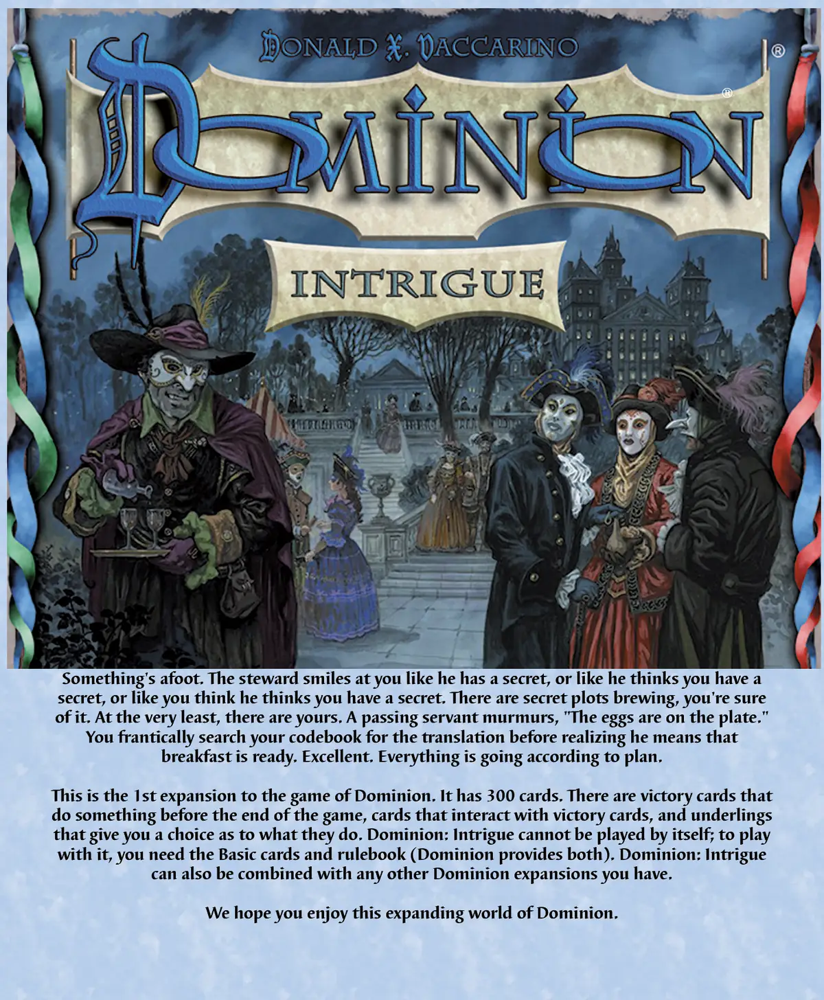
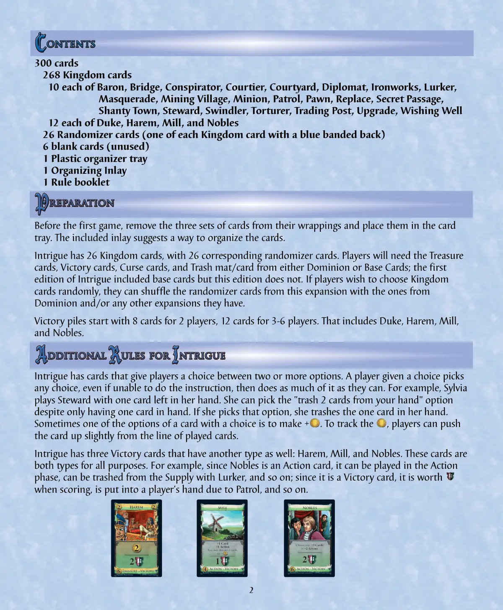
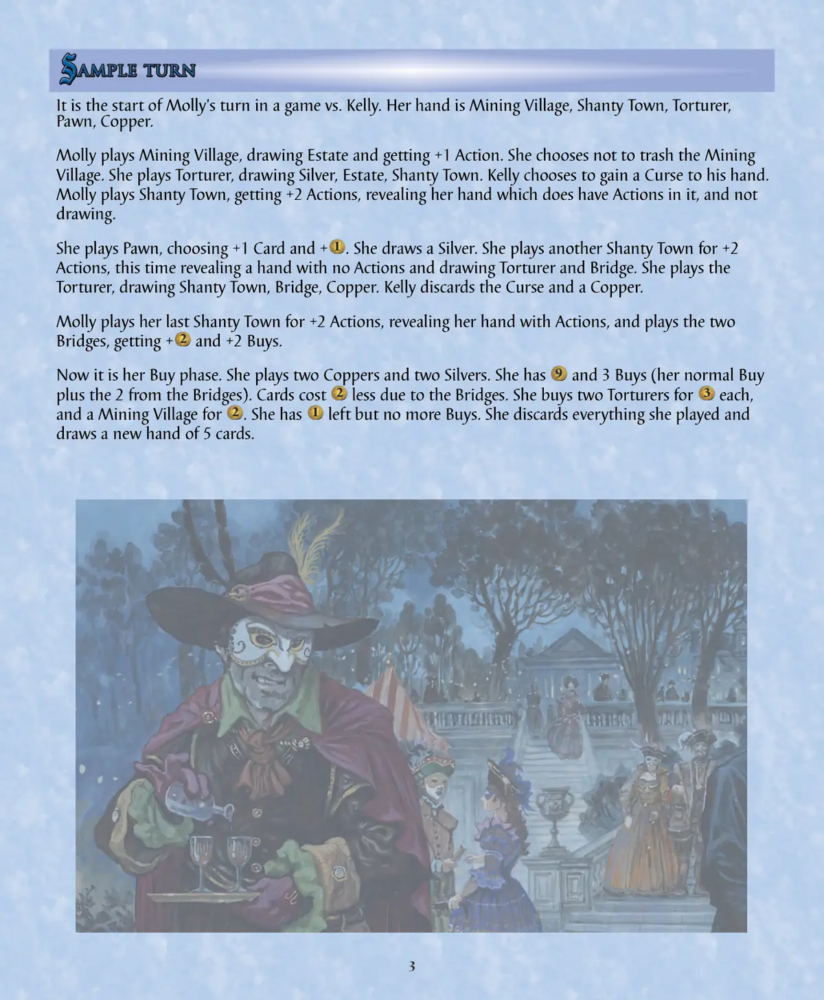
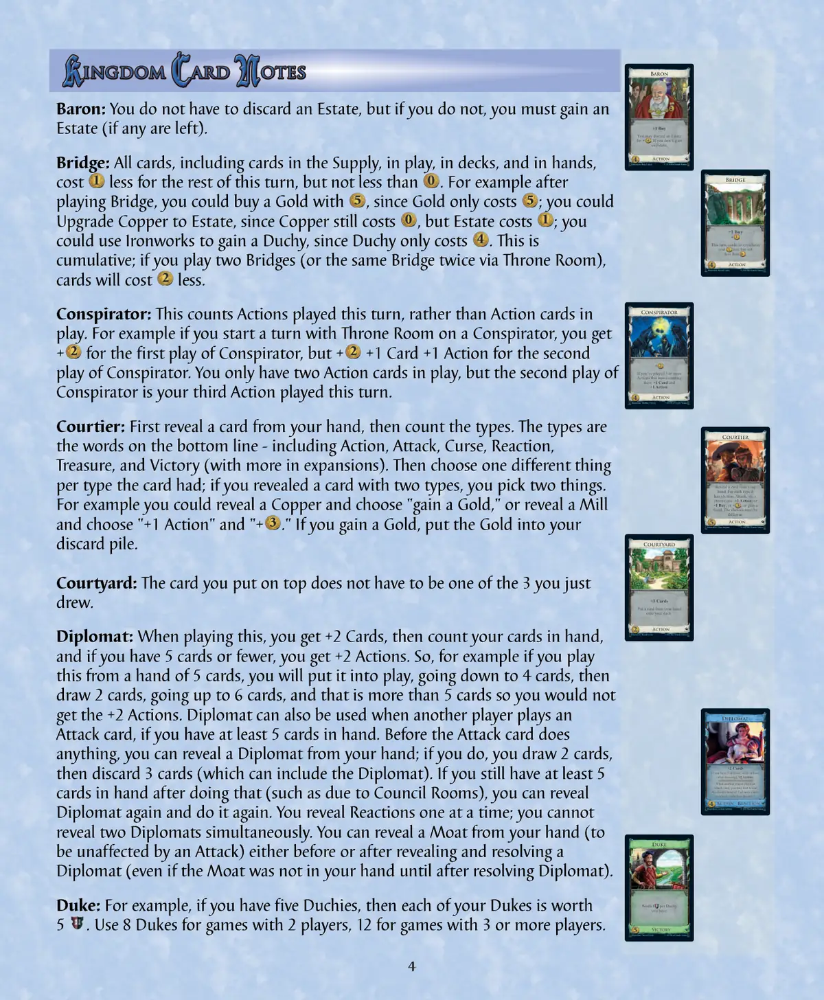
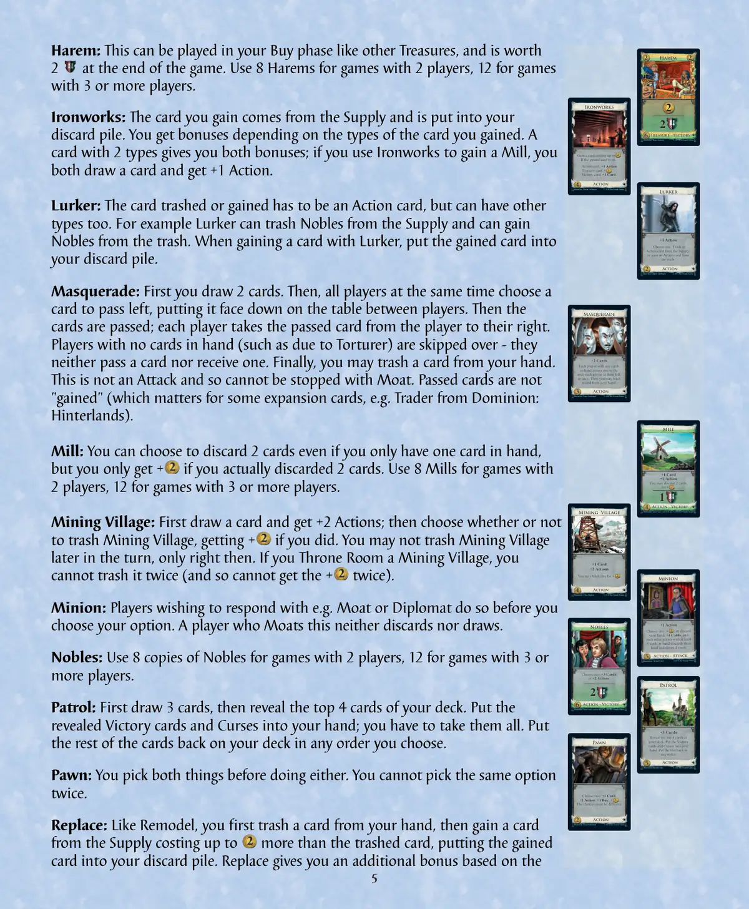
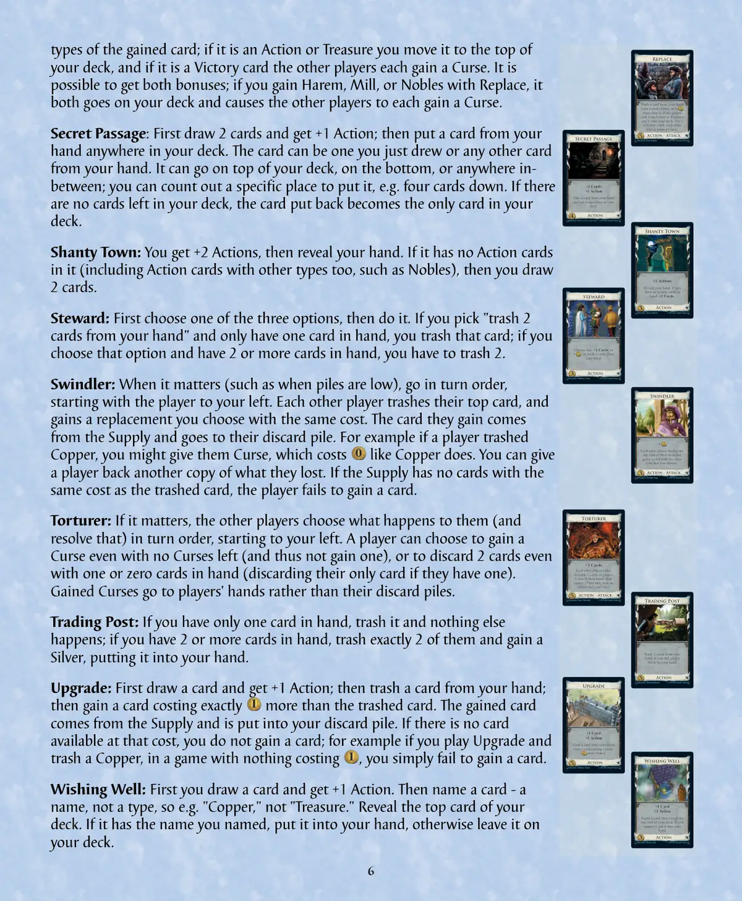
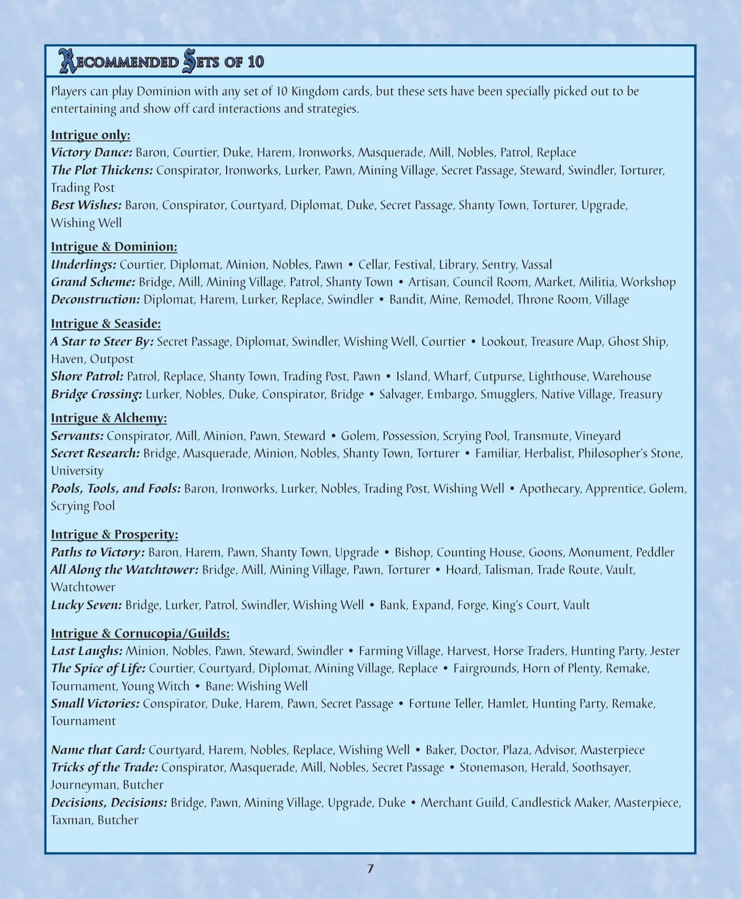
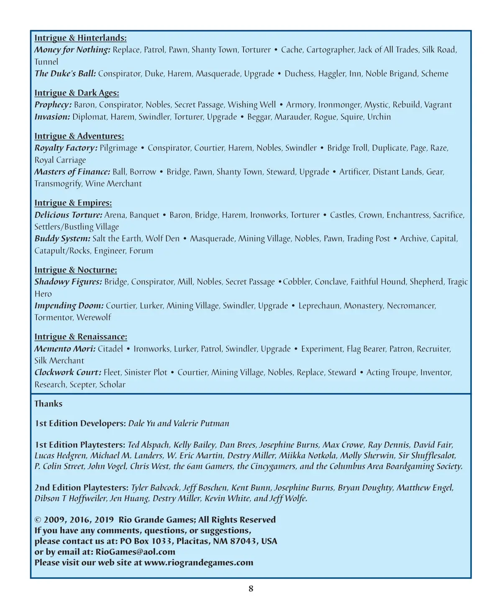

👑 皇舆争霸：暗潮汹涌（二版）
Dominion: Intrigue · 设计：Donald X. Vaccarino · Rio Grande Games 出版 · 2–6 人 · 官方英文规则书全文翻译（8 页 · AI 辅助机翻）
本页收录《皇舆争霸：暗潮汹涌（二版）》（Dominion: Intrigue, 2009）的原版官方规则书全部 8 页（底本：Rio Grande Games 官方，Dominion-Intrigue-2nd-Edition-Rules.pdf），逐页随图排列，点击任意图片即可放大查看；每页下方默认折叠了该页的 AI 辅助中文机翻对照，需要时可展开。规则内容归 Rio Grande Games 及版权方所有，收录仅供个人学习查阅。
整理说明：机翻对照按本站术语口径对齐（牌库/手牌/回合/轮/板块/指示物等），PDF 图文混排页的语序可能与原书视觉顺序略有出入；规则细节请一律以页面上方原书页面为准。

📝 第 1 页 AI 机翻对照（点击展开）
有些事情正在酝酿。管家对你微笑，仿佛他有个秘密，或者他认为你有个秘密，或者你认为他认为你有个秘密。你确信有秘密计划正在酝酿。至少，你有你自己的计划。一个路过的仆人低声说："鸡蛋在盘子上。"你疯狂地在密码书中寻找翻译，然后才意识到他的意思是早餐准备好了。太好了。一切都按计划进行。
这是《Dominion》游戏的第一个扩展。它包含300张卡牌。有在游戏结束前能做些事情的胜利卡牌，与胜利卡牌互动的卡牌，以及给你选择它们做什么机会的下属卡牌。《Dominion: Intrigue》不能单独游玩；要游玩它，你需要基础卡牌和规则书（《Dominion》提供这两者）。《Dominion: Intrigue》也可以与你拥有的任何其他《Dominion》扩展组合使用。
我们希望你能享受这个不断扩展的《Dominion》世界。®

📝 第 2 页 AI 机翻对照（点击展开）
300张卡牌
268张王国卡牌
每种各10张：男爵、桥梁、阴谋家、朝臣、庭院、外交官、铁匠铺、潜伏者、假面舞会、矿村、仆从、巡逻、兵卒、替换、秘密通道、棚户区、管家、骗子、折磨者、贸易站、升级、许愿井
每种各12张：公爵、闺房、磨坊、贵族
26张随机卡牌（每种王国卡牌各一张，背面有蓝色条纹）
6张空白卡牌（未使用）
1个塑料整理托盘
1个整理内衬
1本规则手册
在第一局游戏前，从包装中取出三组卡牌并将它们放入卡牌托盘中。附带的内衬提供了一种整理卡牌的建议。
阴谋（Intrigue）有26张王国卡牌，以及26张对应的随机卡牌。玩家需要来自《领土》（Dominion）或基础卡牌中的宝藏卡牌、胜利卡牌、诅咒卡牌和废牌垫/卡牌；阴谋的第一版包含基础卡牌，但此版本不包含。如果玩家希望随机选择王国卡牌，可以将此扩展的随机卡牌与领土和/或他们拥有的任何其他扩展的随机卡牌洗混。
胜利牌堆在2人游戏中起始为8张卡牌，3-6人游戏中为12张卡牌。这包括公爵、闺房、磨坊和贵族。
阴谋中有一些卡牌给予玩家在两个或更多选项之间进行选择的选择。获得选择权的玩家可以选择任何选项，即使无法执行该指令，然后尽可能多地执行它。例如，西尔维娅（Sylvia）在她手牌中只剩一张卡牌时使用管家。尽管手中只有一张卡牌，她仍可以选择"从你的手牌中弃掉2张卡牌"的选项。如果她选择该选项，她会弃掉手中的那张卡牌。
有时，一张有选项的卡牌中的一个选项是制造+。为了跟踪，可以将卡牌从已打出卡牌的行列中稍微向上推。
阴谋有三张同时也是另一种类型的胜利卡牌：闺房、磨坊和贵族。在所有目的上，这些卡牌都是两种类型。例如，由于贵族是行动卡牌，它可以在行动阶段打出，可以被潜伏者从牌库中弃掉，等等；由于它是胜利卡牌，它在计分时价值，会因巡逻而进入玩家的手牌，等等。
闺房
宝藏 - 胜利
插图：Maura Kalusky © 2016 Rio Grande Games
磨坊
+1张牌
+1个行动
你可以弃掉2张牌，
换取+ 。
行动 - 胜利
插图：Marcel-André Cassasola-Merkle © 2016 Rio Grande Games
贵族
选择一项：+3张牌；
或+2个行动。
行动 - 胜利
插图：Marcel-André Cassasola-Merkle © 2016 Rio Grande Games

📝 第 3 页 AI 机翻对照（点击展开）
这是一场莫莉（Molly）对阵凯莉（Kelly）的游戏中莫莉的回合开始。她的手牌是：村庄（Mining Village）、棚屋区（Shanty Town）、折磨者（Torturer）、棋子（Pawn）、铜（Copper）。
莫莉打出村庄，获得庄园（Estate）并获得+1行动。她选择不弃置村庄。她打出折磨者，获得银（Silver）、庄园、棚屋区。凯莉选择获得一张诅咒（Curse）到手牌。
莫莉打出棚屋区，获得+2行动，展示她的手牌（其中确实有行动牌），并且不摸牌。
她打出棋子，选择+1张牌和+1行动。她摸到一张银。她打出另一张棚屋区获得+2行动，这次展示的手牌中没有行动牌，并摸到折磨者和桥（Bridge）。她打出折磨者，获得棚屋区、桥、铜。凯莉弃置诅咒和一张铜。
莫莉打出她最后一张棚屋区获得+2行动，展示她有行动牌的手牌，并打出两张桥，获得+1行动和+2购买力。
现在进入她的购买阶段。她打出两张铜和两张银。她有1行动和3购买力（她的常规购买力加上桥提供的2）。由于桥的效果，卡牌成本降低。她购买两张折磨者，每张，和一个村庄，花费。她剩下但没有更多购买力。她弃置所有打出的牌，并摸一张新的5张手牌。

📝 第 4 页 AI 机翻对照（点击展开）
男爵：你不必弃置一张庄园，但如果你不弃置，你必须获得一张庄园（如果还有剩余）。
桥梁：本回合剩余时间内，所有卡牌（包括供应区的牌、在场的牌、牌库中的牌和手牌中的牌）费用减少，但不少于0。例如，在使用桥梁后，你可以用5购买一张金卡，因为金卡只花费5；你可以将铜牌升级为庄园，因为铜牌仍花费1，但庄园花费2；你可以使用铁匠坊获得一张公爵领地，因为公爵领地只花费5。这是累积的；如果你打出两张桥梁（或者通过王座室重复使用同一张桥梁两次），卡牌费用将减少2。
阴谋家：这计算的是本回合已打出的行动数量，而不是在场的行动卡牌数量。例如，如果你以一张王座室对阴谋家开始回合，你第一次打出阴谋家时获得+1行动，但第二次打出阴谋家时获得+1卡牌+1行动。你只有两张行动卡牌在场上，但第二次打出阴谋家是你本回合打出的第三个行动。
朝臣：首先展示你手牌中的一张牌，然后计算类型。类型是底部的单词——包括行动、攻击、诅咒、反应、宝藏和胜利（扩展中还有更多）。然后为该牌拥有的每种类型选择一个不同的东西；如果你展示了一张有两个类型的牌，你选择两个东西。例如，你可以展示一张铜牌并选择"获得一张金卡"，或者展示一张磨坊并选择"+1行动"和"+1硬币"。如果你获得一张金卡，将金牌放入你的弃牌堆。
庭院：你放在顶部的牌不必是你刚刚抽到的3张牌之一。
外交官：打出此牌时，你获得+2卡牌，然后计算你手牌中的牌数，如果你的牌数为5张或更少，你获得+2行动。因此，例如，如果你从5张牌的手牌中打出此牌，你会将其打出，牌数降至4张，然后抽2张牌，牌数增至6张，这超过了5张，所以你不会获得+2行动。当其他玩家打出攻击卡牌时，如果你手牌中至少有5张牌，也可以使用外交官。在攻击卡牌生效前，你可以展示你手牌中的一张外交官；如果你这样做，你抽2张牌，然后弃置3张牌（可以包括外交官）。如果你这样做后手牌中仍然至少有5张牌（例如由于议事厅的效果），你可以再次展示外交官并再次执行此操作。你一次一张地展示反应牌；你不能同时展示两张外交官。你可以在展示并解决外交官之前或之后展示你手牌中的一张护城河（以避免受到攻击的影响）（即使护城河直到解决外交官后才在你手牌中）。
公爵：例如，如果你有五张公爵领地，那么你的每张公爵都价值3点。2人游戏使用8张公爵，3人或以上玩家游戏使用12张公爵。
+1购买
你可以弃置一张庄园
Baron
行动
插图：Ryan Laukat
© 2016 Rio Grande Games
选择一项：弃掉一张手牌，获得 +3 购买力；或者，如果你不这么做，获得一张庄园。
Bridge
行动
插图：Harald Lieske © 2016 Rio Grande Games
+1 购买力
+
本回合，所有卡牌（各处）成本降低 ，但不低于 0 。
Conspirator
行动
插图：Matthias Catrein © 2016 Rio Grande Games
如果你本回合已经打出 3 个或更多行动（包括此行动），+1 张牌和 +1 行动。
Courtier
行动
插图：Claus Stephan
© 2016 Rio Grande Games
展示你手牌中的一张牌。对于它拥有的每种类型（行动、攻击等），选择一项：+1 行动；或者 +1 购买力；或者 + ；或者获得一张金币。选择必须不同。
Courtyard
行动
插图：Harald Lieske
© 2016 Rio Grande Games
+3 张牌
将你手牌中的一张牌放到你的牌库顶。
Diplomat
行动 - 反应
插图：Lorraine Schleter © 2016 Rio Grande Games
+2 张牌
如果你手牌中有 5 张或更少的牌（摸牌后），+2 行动。
当其他玩家打出一张攻击卡牌时，你可以首先从一张 5 张或更多牌的手牌中展示此牌，然后摸 2 张牌并弃掉 3 张。
Duke
胜利点
插图：Christof Tisch © 2016 Rio Grande Games
每拥有一张公爵，价值 1 。

📝 第 5 页 AI 机翻对照（点击展开）
后宫：这可以在你的购买阶段像其他宝藏一样使用，并在游戏结束时计分。2人游戏使用8个后宫，3人或以上玩家游戏使用12个。
铁匠：你获得的卡牌来自供应区，并被放入你的弃牌堆。你根据你获得的卡牌类型获得奖励。拥有2种类型的卡牌会给你两种奖励；如果你使用铁匠获得磨坊，你既摸一张牌又获得+1行动。
潜伏者：被废弃或获得的卡牌必须是行动卡，但也可以有其他类型。例如，潜伏者可以从供应区废弃贵族，也可以从废弃堆中获取贵族。当使用潜伏者获得卡牌时，将获得的卡牌放入你的弃牌堆。
化装舞会：首先你摸2张牌。然后，所有玩家同时选择一张牌向左传递，将其面朝下放在玩家之间的桌子上。然后传递卡牌；每个玩家从他们右侧的玩家那里接过传递的卡牌。手中没有牌的玩家（例如由于折磨者造成的）会被跳过 - 他们既不传递卡牌也不接收卡牌。最后，你可以从你的手中废弃一张牌。这不是攻击牌，因此不能用护城河来阻止。传递的卡牌不是"获得"的（这对一些扩展卡牌很重要，例如来自多明尼 Hinterlands 的商人）。
磨坊：你可以选择废弃2张牌，即使你手中只有一张牌，但只有当你实际废弃了2张牌时才能获得+1卡牌。2人游戏使用8个磨坊，3人或以上玩家游戏使用12个。
矿村：首先摸一张牌并获得+2行动；然后选择是否废弃矿村，如果废弃了则获得+2购买。你不能在回合的稍后阶段废弃矿村，只能在那时废弃。如果你用王座厅使用矿村，你不能废弃它两次（因此不能两次获得+2购买）。
仆从：希望用例如护城河或外交官回应的玩家在你选择你的选项之前这样做。使用护城河回应此牌的玩家既不也不摸牌。
贵族：2人游戏使用8份贵族，3人或以上玩家游戏使用12份。
巡逻：首先摸3张牌，然后揭示你牌库顶部的4张牌。将揭示的胜利牌和诅咒牌放入你的手中；你必须全部拿取。将剩下的牌以你选择的任何顺序放回你的牌库。
步兵：你在执行任一选项前先选择两个选项。你不能选择相同的选项两次。
替换：如同改造，你首先从手中废弃一张牌，然后从供应区获得一张成本最多比废弃牌多4的卡牌，将获得的卡牌放入你的弃牌堆。替换根据你废弃的卡牌类型给你额外的奖励：
Harem
Treasure - Victory
Illustration: Maura Kalusky © 2016 Rio Grande Games
Ironworks
获得一张成本最多4的卡牌。
如果获得的卡牌是...
行动卡，+1行动
宝藏卡，+
胜利卡，+1张牌
行动
插图：Martin Hoffmann © 2016 Rio Grande Games
潜伏者
+1行动
选择一项：从牌库中弃置一张行动牌；
或者从弃牌堆中获得一张行动牌。
行动
插图：Martin Hoffmann © 2016 Rio Grande Games
化装舞会
+2张牌
每位有手牌的玩家同时将一张手牌传给他们左边下一位有手牌的玩家。然后你可以弃置一张手牌。
行动
插图：Franz Vohwinkel © 2016 Rio Grande Games
磨坊
+1张牌
+1行动
你可以弃置2张牌，获得+ 。
行动 - 胜利
插图：Marcel-André Cassasola-Merkle © 2016 Rio Grande Games
+1行动
选择一项：+ ；或者弃置你的手牌，+4张牌，并且每位其他手牌至少有5张的玩家弃置他们的手牌并抽4张牌。
仆从
插图：Christof Tisch
© 2016 Rio Grande Games
行动 - 攻击
贵族
选择一项：+3张牌；
或者+2行动。
行动 - 胜利
插图：Marcel-André Cassasola-Merkle © 2016 Rio Grande Games
矿村
+1张牌
+2行动
你可以弃置这张牌，获得+ 。
行动
插图：Claus Stephan © 2016 Rio Grande Games
巡逻
插图：Harald Lieske © 2016 Rio Grande Games
+3张牌
展示你牌库顶部的4张牌。将胜利牌和诅咒牌放入你的手牌。其余的牌以任意顺序放回牌库。
行动
骑士
选择两项：+1张牌；
+1行动；+1购买；+ 。
这些选择必须不同。
行动
插图：Franz Vohwinkel © 2016 Rio Grande Games

📝 第 6 页 AI 机翻对照（点击展开）
获得卡牌的类型；如果它是行动牌或宝藏牌，你将其移至牌库顶部，如果它是胜利牌，则其他每位玩家各获得一张诅咒牌。有可能同时获得两个奖励；如果你通过替换获得后宫、磨坊或贵族牌，它既会进入你的牌库顶部，也会导致其他每位玩家各获得一张诅咒牌。
秘密通道：首先摸2张牌并获得+1行动；然后将你手牌中的一张牌放入牌库的任意位置。这张牌可以是刚摸到的牌，也可以是你手牌中的任何其他牌。它可以放在牌库顶部、底部或中间任何位置；你可以数出特定的放置位置，例如从顶部数第四张的位置。如果牌库中没有剩余的牌，放回的牌将成为牌库中唯一的牌。
棚户区：你获得+2行动，然后展示你的手牌。如果你的手牌中没有行动牌（也包括同时具有其他类型的行动牌，如贵族牌），则你摸2张牌。
管家：首先从三个选项中选择一个，然后执行它。如果你选择"弃掉手牌中的2张牌"但手中只有一张牌，你弃掉那张牌；如果你选择该选项且手中有2张或更多牌，你必须弃掉2张牌。
骗子：在需要时（例如牌堆数量少时），按顺时针顺序，从你左边的玩家开始。每位其他玩家弃掉他们牌库顶部的牌，并获得你选择的相同费用的替代牌。他们获得的牌来自供应区并放入他们的弃牌堆。例如，如果一位玩家弃掉了铜钱，你可以给他们诅咒牌，其费用与铜钱相同。你可以给玩家一张他们失去的牌的复制品。如果供应区中没有与被弃牌相同费用的牌，该玩家无法获得一张牌。
折磨者：在需要时，其他玩家按顺时针顺序（从你左边开始）选择对他们发生的事情（并解决该选择）。玩家可以选择即使没有剩余的诅咒牌也获得一张诅咒牌（从而不获得任何牌），或者即使手中有零张或一张牌也弃掉2张牌（如果只有一张牌则弃掉它）。获得的诅咒牌进入玩家的手牌而非弃牌堆。
贸易站：如果你只有一张手牌，弃掉它且没有其他事情发生；如果你有2张或更多手牌，弃掉其中的恰好2张并获得一张银牌，将其放入你的手牌。
升级：首先摸一张牌并获得+1行动；然后弃掉你手牌中的一张牌；然后获得一张费用比被弃牌多1的牌。获得的牌来自供应区并放入你的弃牌堆。如果没有该费用的可用牌，你不会获得一张牌；例如，如果你打出升级并弃掉一张铜钱，而在游戏中没有费用为1的牌，你 simply 无法获得一张牌。
许愿井：首先你摸一张牌并获得+1行动。然后命名一张牌——
名称，而非类型，例如"铜"，而非"宝藏"。揭示你牌库顶的牌。如果它有你命名的名称，将其放入你的手牌，否则将其留在你的牌库上。
替换
行动 - 攻击
插图：Claus Stephan © 2016 Rio Grande Games
弃掉你手牌中的一张牌。
获得一张费用比它多
的牌。如果获得的牌是行动或宝藏牌，将其放到你的牌库上；如果它是胜利牌，则每位其他玩家获得一张诅咒牌。
秘密通道
行动
插图：Marcel-André Cassasola-Merkle © 2016 Rio Grande Games
+2 张牌
+1 行动
从你的手牌中拿一张牌并将其放到你的牌库的任何位置。
贫民窟
+2 行动
展示你的手牌。如果你的手牌中没有行动牌，+2 张牌。
行动
插图：Maura Kalusky © 2016 Rio Grande Games
选择一项：+2 张牌；或 + ；或弃掉你手牌中的 2 张牌。
管家
行动
插图：Matthias Catrein
© 2016 Rio Grande Games
+
每位其他玩家弃掉他们牌库顶的牌并获得一张你选择的有相同费用的牌。
骗子
插图：Alexander Jung
© 2016 Rio Grande Games
行动 - 攻击
折磨者
插图：Franz Vohwinkel © 2016 Rio Grande Games
+3 张牌
每位其他玩家要么弃掉 2 张牌，要么获得一张诅咒牌到手牌，由他们选择。（他们可以选择他们无法执行的一项。）
行动 - 攻击
+1 张牌
+1 行动
弃掉你手牌中的一张牌。
获得一张费用恰好比它多
的牌。
升级
插图：Matthias Catrein
© 2016 Rio Grande Games
行动
贸易站
弃掉你手牌中的 2 张牌。如果你这样做了，获得一张白银到手牌。
行动
插图：Martin Hoffmann © 2016 Rio Grande Games
许愿井
行动
插图：Ryan Laukat © 2016 Rio Grande Games
+1 张牌
+1 行动
命名一张牌，然后揭示你牌库顶的牌。如果你命名了它，将其放入你的手牌。

📝 第 7 页 AI 机翻对照（点击展开）
玩家可以使用任意10张王国卡牌组合来玩《Dominion》，但这些组合经过特别挑选，旨在提供娱乐性并展示卡牌互动和策略。
仅限《Intrigue》：
胜利之舞(Baron, Courtier, Duke, Harem, Ironworks, Masquerade, Mill, Nobles, Patrol, Replace)
情节愈演愈烈(Conspirator, Ironworks, Lurker, Pawn, Mining Village, Secret Passage, Steward, Swindler, Torturer, Trading Post)
美好祝愿(Baron, Conspirator, Courtyard, Diplomat, Duke, Secret Passage, Shanty Town, Torturer, Upgrade, Wishing Well)
《Intrigue》与《Dominion》：
下属们(Courtier, Diplomat, Minion, Nobles, Pawn • Cellar, Festival, Library, Sentry, Vassal)
宏伟计划(Bridge, Mill, Mining Village, Patrol, Shanty Town • Artisan, Council Room, Market, Militia, Workshop)
解构(Diplomat, Harem, Lurker, Replace, Swindler • Bandit, Mine, Remodel, Throne Room, Village)
《Intrigue》与《Seaside》：
指引之星(Secret Passage, Diplomat, Swindler, Wishing Well, Courtier • Lookout, Treasure Map, Ghost Ship, Haven, Outpost)
海岸巡逻(Patrol, Replace, Shanty Town, Trading Post, Pawn • Island, Wharf, Cutpurse, Lighthouse, Warehouse)
桥梁穿越(Lurker, Nobles, Duke, Conspirator, Bridge • Salvager, Embargo, Smugglers, Native Village, Treasury)
《Intrigue》与《Alchemy》：
仆人们(Conspirator, Mill, Minion, Pawn, Steward • Golem, Possession, Scrying Pool, Transmute, Vineyard)
秘密研究(Bridge, Masquerade, Minion, Nobles, Shanty Town, Torturer • Familiar, Herbalist, Philosopher's Stone, University)
水池、工具与傻瓜(Baron, Ironworks, Lurker, Nobles, Trading Post, Wishing Well • Apothecary, Apprentice, Golem, Scrying Pool)
《Intrigue》与《Prosperity》：
胜利之路(Baron, Harem, Pawn, Shanty Town, Upgrade • Bishop, Counting House, Goons, Monument, Peddler)
守望塔(Bridge, Mill, Mining Village, Pawn, Torturer • Hoard, Talisman, Trade Route, Vault, Watchtower)
幸运七(Bridge, Lurker, Patrol, Swindler, Wishing Well • Bank, Expand, Forge, King's Court, Vault)
《Intrigue》与《Cornucopia/Guilds》：
最后的笑声(Minion, Nobles, Pawn, Steward, Swindler • Farming Village, Harvest, Horse Traders, Hunting Party, Jester)
生活的滋味(Courtier, Courtyard, Diplomat, Mining Village, Replace • Fairgrounds, Horn of Plenty, Remake, Tournament, Young Witch • Bane: Wishing Well)
小胜利(Conspirator, Duke, Harem, Pawn, Secret Passage • Fortune Teller, Hamlet, Hunting Party, Remake, Tournament)
说出那个名字(Courtyard, Harem, Nobles, Replace, Wishing Well • Baker, Doctor, Plaza, Advisor, Masterpiece)
贸易技巧(Conspirator, Masquerade, Mill, Nobles, Secret Passage • Stonemason, Herald, Soothsayer, Journeyman, Butcher)
抉择，抉择(Bridge, Pawn, Mining Village, Upgrade, Duke • Merchant Guild, Candlestick Maker, Masterpiece,)
游戏概述
Taxman, Butcher 是一款 2-4 人的快节奏卡牌游戏，玩家扮演收税官和屠夫，争夺城市中的控制权。
游戏组件
- 108 张卡牌
- 1 个起始玩家标记
- 1 个计分板
游戏目标
通过收集特定组合的卡牌来获得最多的胜利点（VP）。游戏结束时拥有最多 VP 的玩家获胜。
设置
- 洗混所有卡牌，形成一个牌库。
- 每位玩家从牌库中抽取 5 张牌作为起始手牌。
- 将起始玩家标记随机交给一位玩家。
- 将计分板放在游戏区域中央。
游戏回合
游戏按回合进行，每位玩家在自己的回合中执行以下步骤：
- 摸牌阶段：从牌库顶摸 2 张牌。
- 行动阶段：执行以下行动之一：
- 收税：打出一张 Taxman 卡牌，从牌库中抽取与该卡牌数字相同数量的牌。 <ul> <li><strong>屠宰</strong>：打出一张 Butcher 卡牌，弃掉与该卡牌数字相同数量的牌。</li> <li><strong>组合</strong>：打出一张组合卡牌（如 Pair, Triple, Straight 等），获得相应的 VP。</li> </ul>
- 弃牌阶段：如果手牌超过 7 张，必须弃掉多余的牌，直到手牌数为 7 张。
卡牌类型
- Taxman 卡牌：数字 1-10，用于收税行动。
- Butcher 卡牌：数字 1-10，用于屠宰行动。
- 组合卡牌：
- Pair（对子）：两张相同数字的卡牌，获得 5 VP。 <ul> <li>Triple（三张）：三张相同数字的卡牌，获得 10 VP。</li> <li>Straight（顺子）：连续三张数字的卡牌，获得 15 VP。</li> <li>Full House（满堂红）：一对加三张，获得 20 VP。</li> </ul>
游戏结束
当牌库用完且一位玩家打出最后一张牌时，游戏立即结束。玩家计算各自手中的 VP，拥有最多 VP 的玩家获胜。
单人模式
单人模式的目标是获得至少 50 VP。玩家按照正常规则进行游戏，但每回合结束时必须将手牌数减少到 3 张。
扩展
Taxman, Butcher 有一个名为 "Market Expansion" 的扩展，增加了新的卡牌类型和特殊行动。

📝 第 8 页 AI 机翻对照（点击展开）
阴谋与边境地区：
不劳而获：替换、巡逻、当铺、棚户区、折磨者 • 储藏室、制图师、万事通、丝绸之路、隧道
公爵的舞会：阴谋家、公爵、闺房、假面舞会、升级 • 公爵夫人、讨价还价者、客栈、贵族强盗、计谋
阴谋与黑暗时代：
预言：男爵、阴谋家、贵族、秘密通道、许愿井 • 军械库、五金商、神秘主义者、重建、流浪汉
入侵：外交官、闺房、骗子、折磨者、升级 • 乞丐、掠夺者、流氓、侍从、流浪儿
阴谋与冒险：
皇室工厂：朝圣 • 阴谋家、朝臣、闺房、贵族、骗子 • 桥怪、复制、侍从、夷为平地、皇家马车
金融大师：舞会、借贷 • 桥、当铺、棚户区、管家、升级 • 工匠、遥远之地、齿轮、变形、酒商
阴谋与帝国：
美味折磨：竞技场、宴会 • 男爵、桥、闺房、铁匠铺、折磨者 • 城堡、王冠、女巫、献祭、定居者/繁忙村庄
伙伴系统：盐碱地、狼穴 • 假面舞会、采矿村庄、贵族、当铺、贸易站 • 档案馆、首都、投石机/岩石、工程师、论坛
阴谋与夜曲：
神秘人物：桥、阴谋家、磨坊、贵族、秘密通道 • 鞋匠、宗教会议、忠实的猎犬、牧羊人、悲剧英雄
迫在眉睫的末日：朝臣、潜伏者、采矿村庄、骗子、升级 • 小精灵、修道院、死灵法师、折磨者、狼人
阴谋与文艺复兴：
死亡纪念：城堡 • 铁匠铺、潜伏者、巡逻、骗子、升级 • 实验、旗手、赞助人、招募者、丝绸商人
机械宫廷：舰队、阴险的计谋 • 朝臣、采矿村庄、贵族、替换、管家 • 剧团、发明家、研究、权杖、学者
致谢
第一版开发者：Dale Yu 和 Valerie Putman
第一版测试者：Ted Alspach, Kelly Bailey, Dan Brees, Josephine Burns, Max Crowe, Ray Dennis, David Fair, Lucas Hedgren, Michael M. Landers, W. Eric Martin, Destry Miller, Miikka Notkola, Molly Sherwin, Sir Shufflesalot, P. Colin Street, John Vogel, Chris West, the 6am Gamers, the Cincygamers, 以及 Columbus Area Boardgaming Society。
第二版测试者：Tyler Babcock, Jeff Boschen, Kent Bunn, Josephine Burns, Bryan Doughty, Matthew Engel, Dibson T Hoffweiler, Jen Huang, Destry Miller, Kevin White, 和 Jeff Wolfe。
© 2009, 2016, 2019 Rio Grande Games；保留所有权利
如果您有任何评论、问题或建议，
请通过以下方式联系我们：美国新墨西哥州普拉西塔斯市 1033 号信箱
或通过电子邮件：RioGames@aol.com
请访问我们的网站 www.riograndegames.com